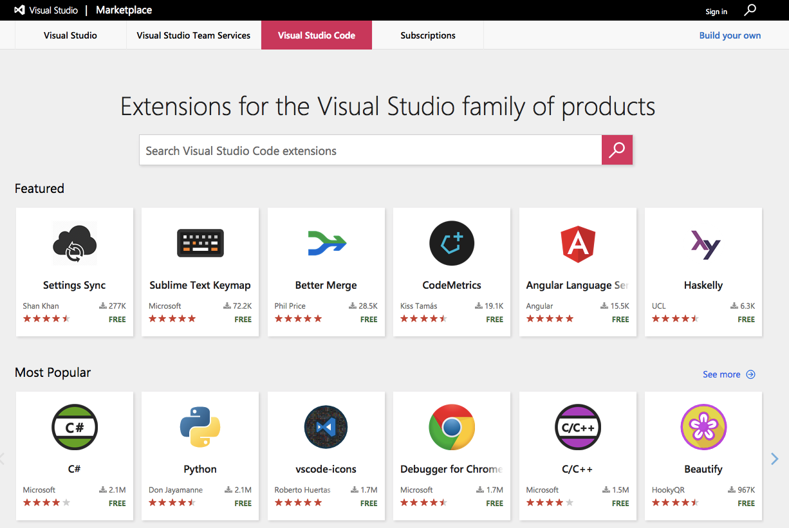
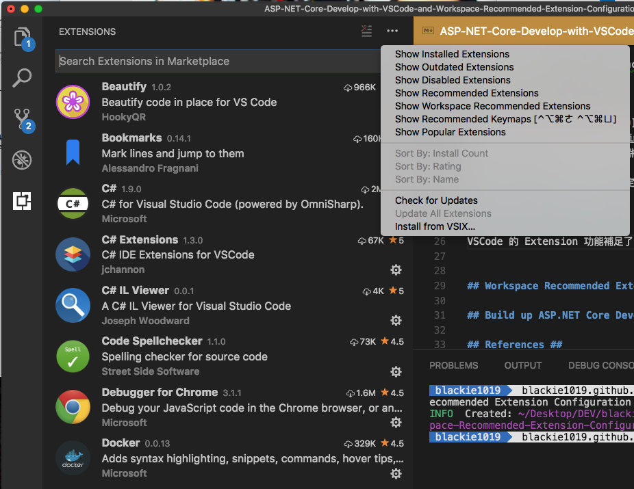
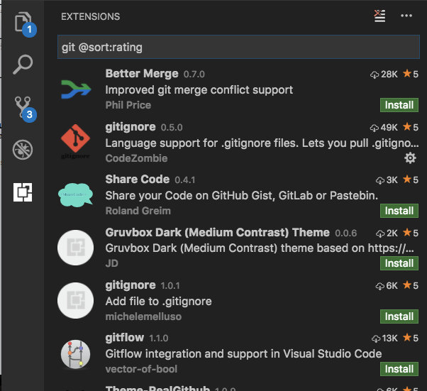
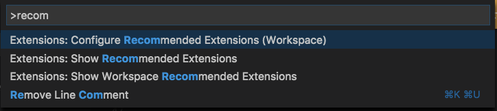
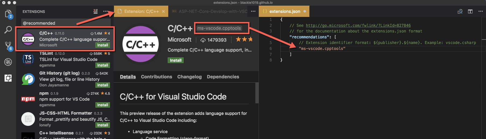
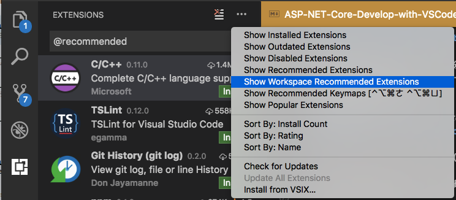
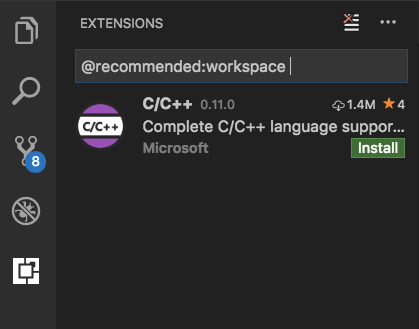

介紹如何使用 VSCode 中 Workspace Recommended Extension Configuration 這項功能來幫我們迅速的建立 VSCode 的開發環境．
今天看到 本週的Editor 編輯者#9的影片，介紹了 VSCode 中 Workspace Recommended Extension Configuration 這項功能，而本篇將接續分享如何透過這項功能來幫我們迅速的建立 VSCode 的開發環境．
建議對 VSCode 有興趣的朋友一定要去看一下影片！
VSCode Extensions and Recommended Extension feature
VSCode 的 Extension 功能與 Extension Marketplace 補足了 VSCode 上許多的好用的功能，也同時帶給我們安裝上極佳的方便性．

在編輯器的 Activity Bar 最下方的 Extension 功能中其實還保留幾個快速的導覽功能，點擊 Extension 後可在視窗的右上方的 … 圖示透過滑鼠右鍵點擊後看到更多的選項：

其中 Show Popular Extension 等同我們用下載量做排序．而排序總共有三種：
依下載量排序
@sort:installs
依評分排序
@sort:rating
依名稱排序
@sort:name
如果我們有一個關鍵字做查詢，也可以透過排序功能將我們的查詢結果從新整理，如：關鍵字 git,依評分排序：
git @sort:rating

而另外一個選項 Recommended Extension 則是可以直接看當前推薦的套件有哪些．
Workspace Recommended Extension Configuration
Recommended Extension 也可以分別運作在不同的專案，依據專案設定不同的 Workspace Recommended Extension ，如此一來當該團隊有新成員加入的時候，就可以第一時間把編輯器的安裝說明快速帶著新人上手．
我們可以透過在 Command Palette 中輸入 Recommended Extension 作過濾找到 Extensions : Configure Recommended Extensions(Workspace) ：

接著將套件的識別名稱貼入及可，請參考下方取得名稱方式：

當完成加入後，點擊 Extension 右上方的 … 圖示選擇 Show Workspace Recommended Extensions :

即可看到我們剛剛給當前專案加入的推薦套件：

再次提醒，新增專案推薦套件會在當前的專案底下的新增一個資料夾與一個 extensions.json 檔案，以自身在中間規模圖隊(100人上下)服務的經驗，請務必要將該檔案加入版控(Vision Control)才會方便大家互相支援．
Build up ASP.NET Core Development Editor
而這邊就來分享小編在 ASP.NET Core 開發的環境所需要 Extensions ，有興趣的請直接拿去用摟．
載點：dot-net-core-vscode-extensions
- C#
- C# Extensions
- C# IL Viewer
- NuGet Package Manager
- Guides
- Output Colorizer
- Settings Sync
- vscode-icons
- Git Lens
- gitignore
- yo
- Docker
- Code Spellchecker
- Log File Highlighter
- Beautify
- markdownlint